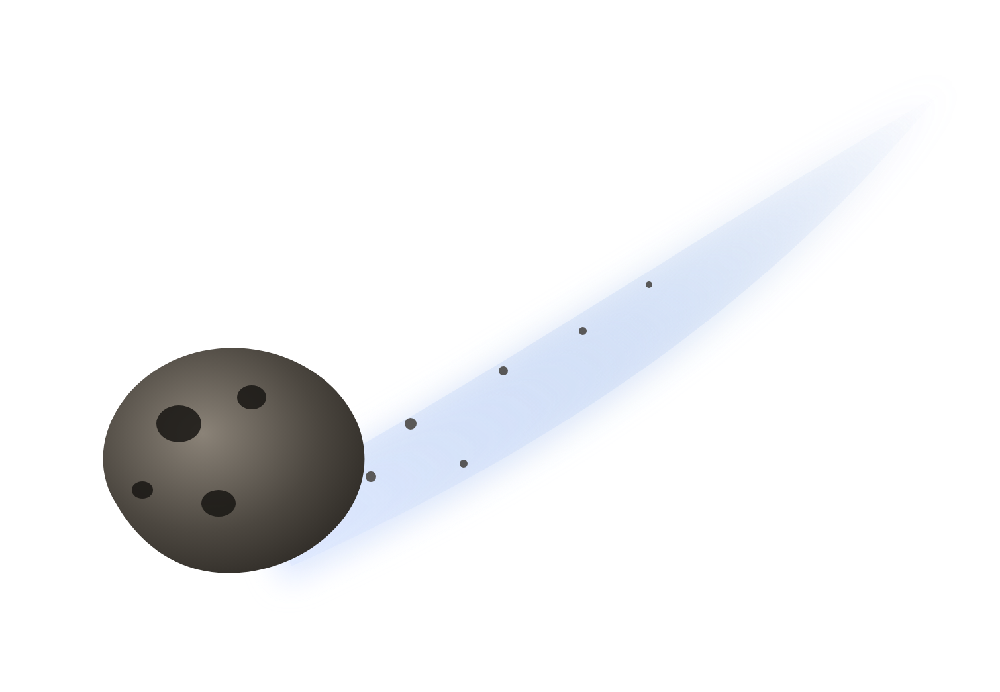
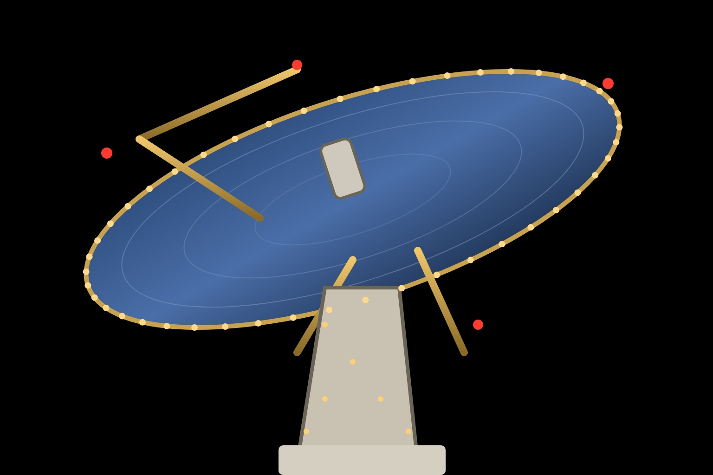

Сезон 2026 - 2027
Экскурсия-шоу в Министерство новогодних дел. Нижний Новгород, Ольгино 62.
Сигнал принят
Тарелка поймала письмо
Оно шло с орбиты четыре дня. Внутри - список детей, которые ждут чуда.
27 ноября - 10 января
Детям 4+